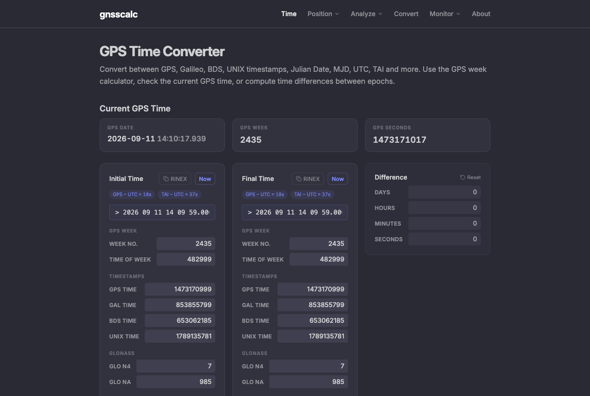
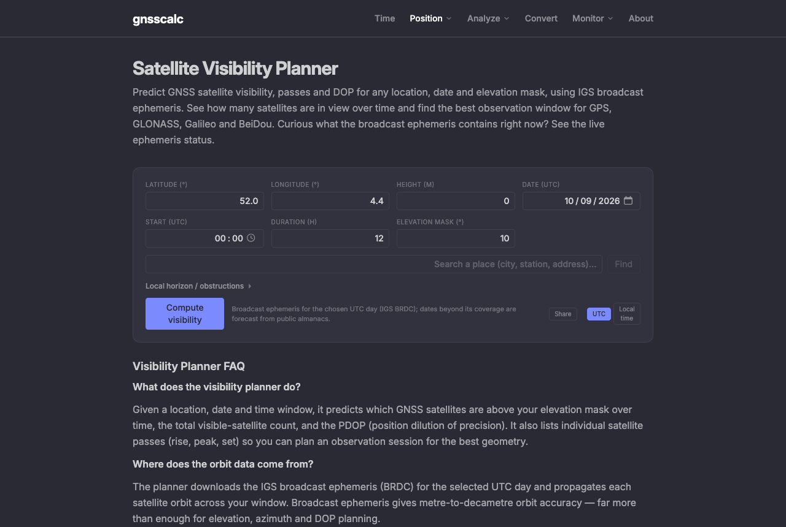

GNSS Calculator
A browser toolkit for satellite-navigation work: convert between time scales and coordinate frames, plan observations, and inspect the files a receiver actually produces.

Why it exists
Satellite navigation has no single clock. GPS counts seconds from 6 January 1980 and ignores leap seconds; Galileo and BeiDou each start from their own epoch; receivers log UNIX timestamps; astronomers and orbit models want Julian dates; and the offsets between all of them drift as leap seconds are added. Getting one of these conversions wrong by 18 seconds is an easy mistake to make and an expensive one to debug.
The usual answer is a spreadsheet someone made years ago, or a handful of separate single-purpose pages. GNSS Calculator puts the conversions, the observation-file viewers and the planning tools in one place, and runs them in the browser so nothing has to be uploaded anywhere.
What's in it
Twelve tools, in four groups:
- Time — conversion across GPS, Galileo, BeiDou, GLONASS, UNIX, Julian Date, MJD, UTC, TAI and TT; GPS week and time-of-week; differences between two epochs.
- Position — a positioning calculator, coordinate transforms between ECEF and geodetic frames, and a satellite visibility planner.
- Analyze — quality control and solution inspection for observation files, plus RINEX, NMEA, ANTEX and spectrum viewers, and a format converter.
- Monitor — live NTRIP stream connection and current broadcast-ephemeris health.

How it works
Everything runs client-side. Observation files you open — RINEX, NMEA, ANTEX — are parsed in the browser and never leave the machine, which matters when the data is a survey you don't own. Orbit work uses IGS broadcast ephemeris for the requested day, falling back to public almanacs for dates beyond its coverage.
The calculation engine is published separately as gnss-js, so the conversions can be used without the interface.
Details
- Type
- Web application, runs entirely in the browser
- Audience
- Surveyors, geodesists, GNSS engineers and researchers
- Data sources
- IGS broadcast ephemeris, public almanacs, NTRIP casters
- Source
- MiguelPuntoEs/gnss-js
- Cost
- Free, no account required
- Launched
- — add the year